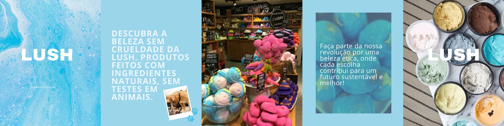
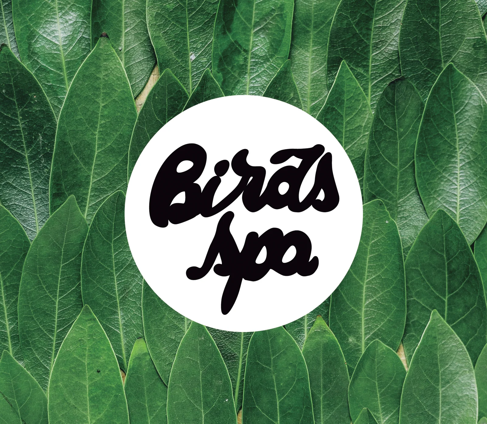
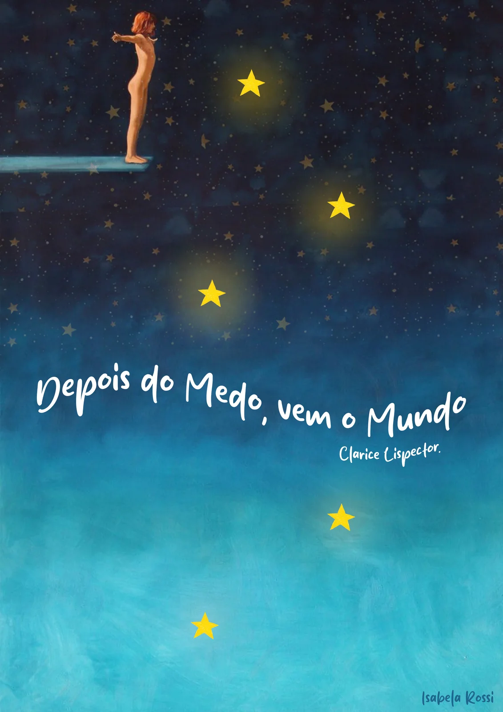
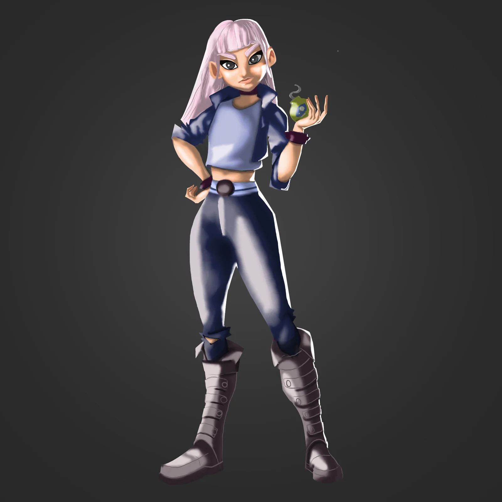
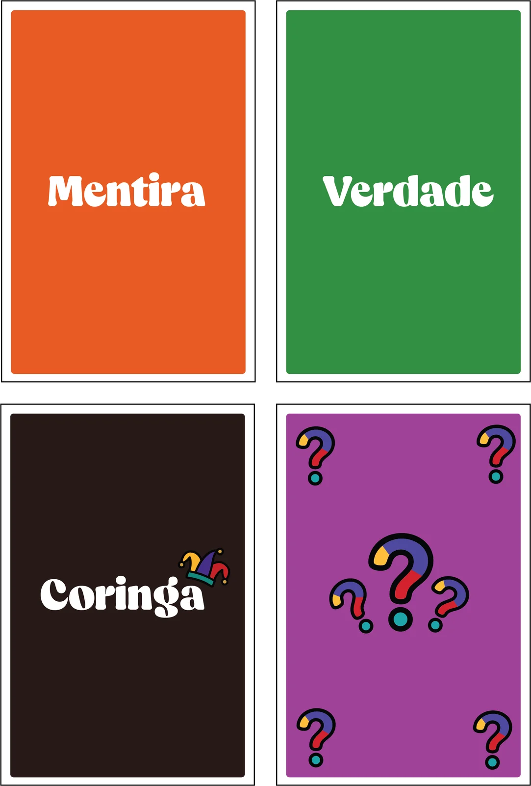
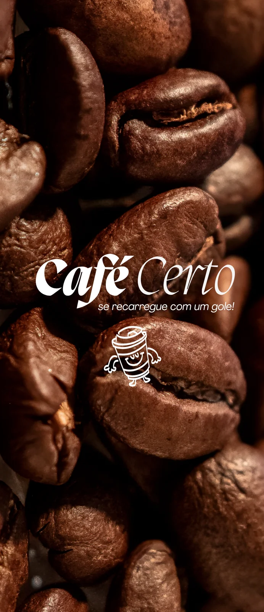
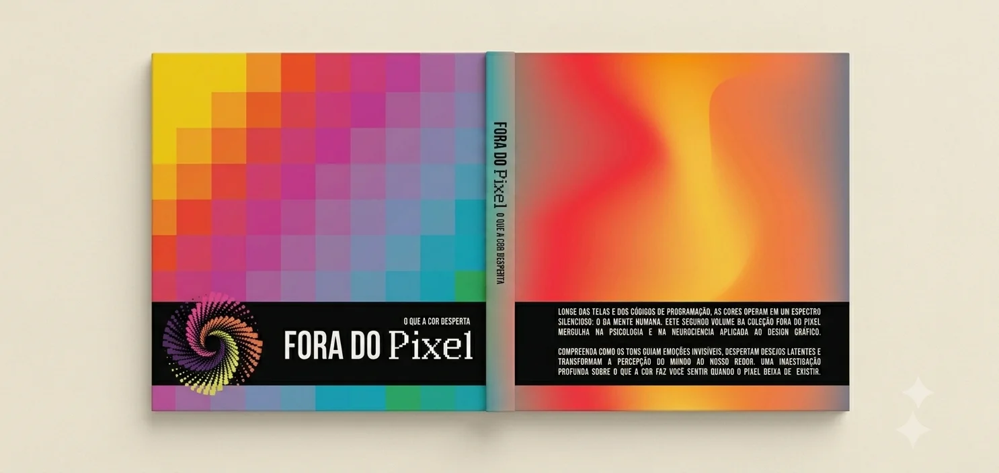
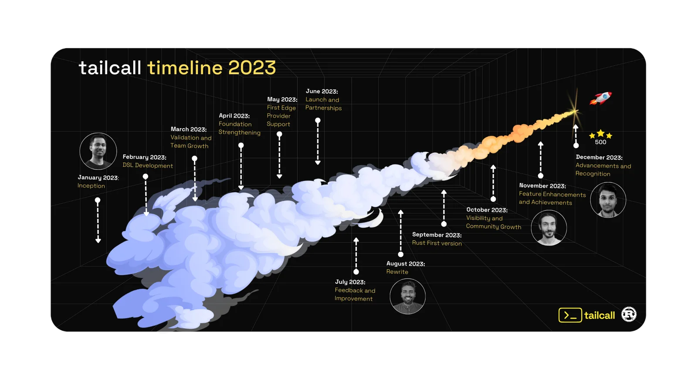
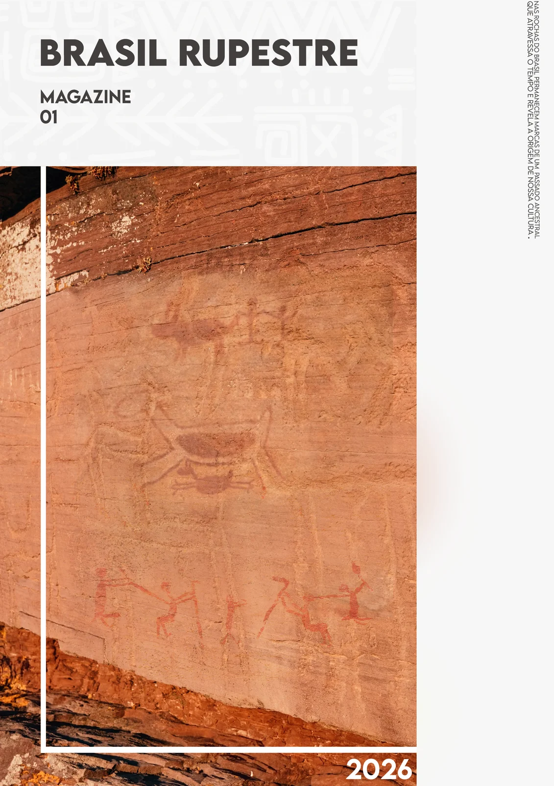

Creative Designer · Social Media
Helping people & brands communicate beautifully.
I'm Isabela — a creative designer based in Brazil, specializing in brand identity and social media content. I love mixing playful visuals with strategic thinking to help brands stand out. When I'm not designing, you'll find me sketching on grid paper and collecting cool keycaps.

Brand campaign material for LUSH cosmetics.

Spa & cosmetics brand identity — Birds Spa / Birds' Apartment.

Book and poster campaign — "Depois do Medo vem o Mundo".

Signed original artworks and editorial covers by Isabela Rossi.

Card game art — verdade, mentira, coringa and verso, plus box.

Coffee brand identity — ad creative and packaging mockup.

Book cover design for "Forra do Pixel".

Timeline graphic for Tailcall.

Magazine cover art — Brasil Rupestre.
Have a project in mind? Let's create something playful together.